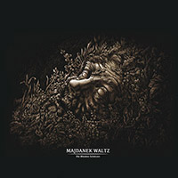
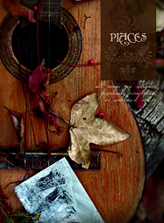
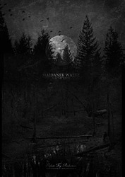
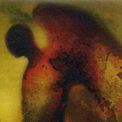
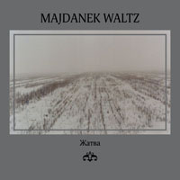
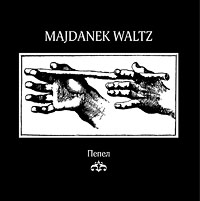

|
04.2020
Есть музыкальные коллективы, для которых необходимо созреть. И есть
альбомы, которым необходимо вызреть. Спустя четыре года после выхода
последнего полноформатного альбома, минуя череду коллабораций и
экспериментов с единомышленниками Patimat Khripa, Vintersolverv и
The Noktulians, Majdanek Waltz возвращается с новым альбомом.
Альбом, песни для которого были сочинены лет десять назад, во
времена классических работ проекта, обрёл свою окончательную форму
сейчас: выверенную, очень личную, камерную. Музыканты оставили
позади шумовые ландшафты и эксперименты со звуком, представив
эмоциональное, почти полностью акустическое звуковое полотно, вновь
напомнив о том, за что в своё время были названы "лучшей группой
отечественного дарк фолка".
В записи альбома принимало участие 19 человек, в числе прочих Анжей
Захарищев фон Брауш (Оберманекен), Александр Ионов (Огонь,
Регион-77), Алексей и Елена Шептуновы (Moon Far Away).
Мастеринг выполнен Jhonnie Kratong (Romowe Rikoito, Kratong).
Альбом издан в трёх форматах: стандартный компакт-диск,
лимитированная кассета в картонной упаковке и коллекционное
двухдисковое издание в конверте формата минивинил, дополненное
синглом "Твои Черты" и набором из четырёх почтовых открыток.
https://codmusicdistro.bandcamp.com/album/her
"Der Weg Der Toten" ("Дорога мёртвых") – совместная работа признанных
музыкальных мистиков Majdanek Waltz , белорусского неоклассического
проекта Vintersolverv (ex-Erde, ex-Svalbard) и тёмной лошадки
русского андерграунда The Noktulians, посвящённая маринистическим
образам в творчестве поэтов-экспрессионистов и символистов рубежа
XIX-XX веков: Георга Гейма, Стефана Малларме, Артюра Рембо и
Александра Блока.
Декламации Павла Блюмкина и Ларисы Архипецкой искусно обрамлены
звучанием камерного ансамбля Majdanek Waltz, дополненным
фортепианными и струнными аранжировками Vintersolverv, порой
отсылающими к мелодическим темам его сольного альбома "Frost På
Träden" (2018, Infinite Fog Productions). Но гармония эта хрупка, и
время от времени на ней проступает ржавчина дарк-эмбиентных и
шумовых пассажей, а иногда она и вовсе разрушается, и звуковое поле
захватывает жёсткое диссонантное звучание The Noktulians. В
результате весь альбом превращается в водоворот звуков и мелодий,
утягивающий неосторожного слушателя в свою пучину...
Оформление альбома выполнила нижегородская художница Елена Лисица.
Физическое издание представлено в двух версиях: компакт-диск тиражом
300 копий в матовом 4-панельном картонном конверте и аудио-кассета
тиражом 50 копий.
Цифровая версия доступна на bandcamp:
https://zhelezobeton.bandcamp.com/album/der-weg-der-toten
заказать CD:
https://vk.com/market-4775373?w=product-4775373_3325164
заказать кассету:
https://vk.com/market-4775373?w=product-4775373_3325165
04.2019
NEN Records представляет самый коллажный и самый структурно
изощренный альбом Majdanek Waltz & Patimat Khripa «Кладовая
крысиного короля».
По словам музыкантов, запись иллюстрирует «противостояние людей и
ночных существ, их извечное сосуществование и вражду» – те самые, о
которых повествует рассказ Александра Грина «Крысолов». Главный
герой, теряя рассудок от голода и любви в охваченном Гражданской
войной Петрограде, прозревает чудовищную правду: мир губит заговор
крыс, которых нельзя отличить от людей.
«Кладовая» – это пространство, где сущности неразличимы, а границы
мерцают. Стихи «серьезных» авторов Ласло Краснахоркаи и Гюнтера Айха
здесь соседствуют с текстами группы «Русский размер» и ВИА «Поющие
гитары», и опознать, где какие, нет на первый взгляд никакой
возможности. Студийный брак (гитары, например, писались на сломанный
ноутбук) сливается с изощренной аранжировкой. Альбом напоминает
неопознанный кусок оплавленного металла, найденный в прифронтовой
полосе; мета-сон без всяких швов переходит в пост-явь, и обратно.
Вопрос, который читается в этом горячечном барахтаньи: если крыс
нельзя отличить от людей, то кто с кем ведет войну?
Сумеречное настроение записи поддерживает оформление, построенное на
картинах художника Игоря Селеменева. По замечанию музыкантов, «если
убрать из альбома сюжет, то работы Селеменева максимально точно все
перескажут».
К каждой кассете прилагается открытка работы художницы Лены Лисицы.
На лицевой стороне изображен титульный лист немецкой книги Эрта
Эртруса "Кладовая крысиного короля", по некоторым сведениям изданной
в Ротенбурге в 1517 году. На оборотной – обширная цитата из этого
труда, известного по упомянутом рассказу Грина "Крысолов". Как
водится, она много объясняет.
https://nenrecs.bandcamp.com/album/--4
09.2018
Утроворту представляет вашему вниманию первый физический релиз, выполненный для стороннего проекта. Им стал мини-альбом группы Majdanek Walz (Рязань / Москва).
То что было песней о прошедшей любви (в исполнении Глызина) превращается в бесконечный переход по ледяным землям от тьмы до бесконечности, сквозь череду картин белого снега и чёрного неба. Зима смотрит широко открытыми глазами и это не та зима, которую можно вытерпеть. В годовщину блокады — «Зимний сад».
http://ru.utrovortu.com/news/zimniy-sad
12.2017
Стихи Алистера Кроули на русском языке впервые опубликованы в 2017 году. В этом же году выходит первый альбом, где музыканты, ценители творчества поэта, записали звуковое посвящение ему. Опять же впервые над одной записью работали российские музыканты тёмной сцены, которые до этого никогда не пересекались, но с интересом следили за творчеством друг друга – Majdanek Waltz и Денис Третьяков.
Лидер кроторианских ансамблей «Церковь Детства» и «Братья Тузловы» впервые выступил в амплуа чтеца стихов. Рязанцы вспомнили свои изначальные музыкальные эксперименты и первоисточники вдохновения. Бесценную поддержку оказал секретный музыкальный проект The Noktulians. Финальный баланс чёрного традиционно мастерски выставил участник Reutoff и Оцепеневшие – Arsch aka Myrrman.
Помимо всех прочих очевидных юбилеев и круглых важных дат, 2017 год – это год 70-летия со дня кончины Алистера Кроули. Этой пластинкой мы ликвидируем пробел в списке юбилеев года. Вместо вечно модных красных звёздочек-пентаграм, смело используйте этот чёрный конверт. Вешайте на окна, прибивайте на входную дверь, носите с собой. «Каждая женщина, каждый мужчина – звезда».
https://kultfront.bandcamp.com/album/pentagram?fbclid
Ближайшие концерты MW:


11.2017
https://www.facebook.com/festivalDF
03.2017
Фотогалерея с недавно прошедшего концерта MAJDANEK WALTZ и :OTWATM:
https://www.facebook.com/pg/arcto.promo/photos/?tab=album&album_id=1390494840972374
Состоялся выход мини-альбома
«Троны».
http://infinitefog.ru/shop/cd/majdanek-waltz-троны.html
https://majdanekwaltz.bandcamp.com/album/--10
12.2016
Arcto Promo представляет — культовый датский неофолк-проект Of The Wand & The
Moon впервые в России в полном составе! Как в Москве (18 марта 2017), так и в
Санкт-Петербурге (17 марта 2017) группа выйдет на сцену в формате квинтета и
представит новую программу, в которой лизергиновый фолк свингующих 60х буквально
на ваших глазах вступает в неожиданную реакцию с золотым наследием Death In
June. Вечер откроют признанные лидеры отечественной пост-индустриальной
сцены Majdanek Waltz. Количество билетов строго ограничено.
http://vk.com/otwatm17
http://vk.com/arctop
http://fb.com/arcto.promo/events
07.2016
Архивная запись концерта Majdanek Waltz, который состоялся 5 июля 2008 года в
"Музыкальном театре" на улице Константина Заслонова. Там же, где летом 2006 года
прошёл незабываемый концерт Death In July.
https://www.youtube.com/watch?v=ZmpcI7mNZNw
06.2016
Состоялся выход live-альбома «Оцепеневшие Majdanek Waltz Sal Solaris
16.12.11
Запись концерта, который оставил не проходящий шрам в сознании каждого, кто
осмелился его посетить, публикуется через пять лет после того, как улицы Москвы
ненадолго задышали смелостью. Многое и многие изменились за это время, между
предыдущим и нынешним "избирательными циклами" в РФ. В отличие от музыки
Оцепеневших, Majdanek Waltz и Солнечной Соли, которая не растеряла своей
пугающей энергетики. Бессмертная тьма.
https://kultfront.bandcamp.com/album/majdanek-waltz-sal-solaris-161211
05.2016
Каждый творческий шаг рязанской группы Majdanek Waltz – это очередной шаг
навстречу бездне. И особенно решительно главные русские обскурантисты шагнули в
этом направлении со своим последним альбомом Die Blinden Schützen.
Музыкальный путь Majdanek Waltz – это одна из неразгаданных тайн современной
российской музыки. Неизменно открывая прекрасное в трагичном, всю свою
музыкальную карьеру они преследуют какой-то неземной, скрытый от простого
человека эстетический ориентир. Уже встает вопрос – а дарк фолк ли это вообще?
19 июня они дадут первый с момента выхода их нового альбома концерт в Москве.
https://vk.com/majdanekwaltz2016
04.2016
6 мая 2016 в Калининграде состоится выступление групп Majdanek Waltz и Sunset
Wings (арт-пространство «Ворота»).
https://vk.com/majdanekwaltz_kgd
02.04.2016

Как и в ряде других случаев, лучшие из появляющихся произведений искусства весьма далеки от того, чтобы расшифровать их сразу. Знаменитая рязанская группа единомышленников с каждым своим альбомом уходит всё дальше в такие области, для проникновение в которые требуется вовлечение самого слушателя. Посему лишь через время мы можем найти подходящие слова, чтобы сделать запись немного более понятной и уверяем, она достойна куда большего, чем может дать каждый из нас.
Вступление зловещей трубы и обволакивающей черным бархатом виолончели - лишь прелюдия для атональной пьесы, подобной которой не было ни на российской сцене, ни среди неофолковых сотоварищей MW. В ее создании немалая роль отведена культовому проекту Reutoff, именно благодаря их стараниям камерное путешествие во вселенную ночи сопровождается многочисленными отзвуками и бликами, сомнительная природа которых приобретает в их новом контексте какой-то невероятный и пугающий объем, способный поспорить с самой музыкой за право на жизнь. Но довольно намеков, мы уже слышим слова и именно они складываются в музыку. Все тексты принадлежат перу Георга Тракля, а это значит, что картина, отраженная в его глазах, будет вызревать в этих звуках. Плеяду его произведений, нежно перенесенную сквозь времена, мы разделили бы на три смысловых части, две из них относятся к первой композиции, хотя верным будет и то, что все сорок минут мы будем слышать лишь одну большую поэму.
Красное. Первая половина элегии о Сновидце отличается нестерпимо гнетущей атмосферой, хотя о причинах такого хода слушателю остается пока лишь догадываться. Исполненное эхом и гулом повествование тотчас расчерчивает мир неровными линиями делириевого сна. Кошмар, детали которого слишком отчетливы, чересчур тревожны и живы, чтобы поверить в их несуществование. Между сном и явью герой отправляется в свое обреченное путешествие. В одиночестве, под холодным взором высасывающей волю Луны, заброшенный вдалеке от всякой цивилизации, он набредает на одинокий покосившийся дом и видит, как прежнего его владельца уносят мертвым. Уже здесь голос судьбы, звучащий на протяжении альбома в тоскливых флейте и кларнете, заставляет слушателя содрогаться в бессловесном ужасе. Подобно сну, которому нет конца, герой вынужден следовать дальше по той дуге, что уже зафиксировали его норны во вневременном роковом финале.
Синее. И вот в безмерной усталости он сдается перед гипнотическими вибрациями Ночи. В наблюдениях за покачиванием волн травы над землей он находит свою дорогу к пробуждению - в этом искривленном мире он должен смежить веки. Но движущаяся монотонность гитарных переборов отнюдь не способствует скуке, слушатель вынужден ловить каждую деталь сюрреального путешествия по Космосу грез. Тысячи ночей Скиталец борется за глоток настоящего воздуха в середине беспросветного сна. Когда же герой просыпается после этой многолетней пытки, перед ним предстает самое страшное из возможных испытаний. Лунный сонм скрипок и альтов распадается на отдельные голоса, и, когда это происходит, реальность в его вселенной теряет всякий смысл. Крик доисторической ярости пронзает ночь в его попытке осмыслить мир, дарованный лишь на один день. Оставьте ваши надежды - это был самый оптимистичный момент пьесы, и, возможно, единственный.
Темное. Следует понимать, что для альбома были взяты отнюдь не все строки произведений австрийского поэта. В полном их прочтении тема посмертного существования не оставляет никаких вариантов. Даже когда Луна уходит в тень и на короткий миг поднимается Солнце, это не меняет тревожной надрывности поэзии струн. Не обольщайтесь, если Смерть присутствует здесь лишь опосредовано, куда реже, чем может предполагать линия, начатая на предыдущих пластинках. Сон - ее брат - настолько выразителен в треморе духовых инструментов, что они с сестрой практически неразличимы. Более того, он точит нашу жизнь каждую ночь, а любое спасение от его чар лишь разрушает и без того непрочную связь слушателя с самим собой. И вот ледяная смерть забирает Поэта из его упрямо тлеющего дома. И чьи-то глаза уже следят с кромки леса за его последней дорогой. Освобождение? Осознание? Что ж, заключительные аккорды безучастно расправляются и с этими иллюзиями. Какими бы сказками не тешил нас изможденный разум, пугающая истина проста. Темная сторона нашей жизни всегда следует за нами. И однажды она победит.
Пурпур.
http://sulphurflowers.bandcamp.com/album/die-blinden-sch-tzen
27.10.2015
Эпохальный и фундаментальный сборник российского дарк- и нео-фолка, подводящий итог двадцатилетней жизни жанра на российской культурной почве – а также первому десятилетию существования пионера российской дарк-индустрии лейбла Shadowplay. Компиляция объединила весь цвет отечественного неофолка – 18 коллективов, предоставивших эксклюзивные треки, а также исторические редкости, также никогда до этого не издававшиеся. Среди участников – как заслуженные звёзды, так и совсем новые группы и исполнители, для которых сборник станет первым выходом в свет. Диск содержит внушительный буклет с историей российского нео-фолка от лидера MOON FAR AWAY Алексея Шептунова, а также треки-коллаборации, созданные специально для сборника: совместное произведение лидеров KRATONG и NEUTRAL, и совместную композицию MFA и DVAR.
http://www.shadowplay-records.com/consumer.php?lng=ru&page=catalogue&release=spr154
Новый сингл Majdanek Waltz
отвечает на последние вопросы о том, каким должен быть русский дарк-фолк. И
неслучайно в тегах к релизам группы на bandcamp присутствует “death folk”.
Каждая нота и каждое созвучие говорят об этом. Об очаровании величием и красотой
смерти. В соединении Гессе, Бенна и сумрачной меланхолии рязанского проекта
раскрываются неизвестные черты каждого из них. Камерные диалоги флейты и
кларнета, виолончели и гитары повествуют историю угасания всего живущего, а
новый для группы вокал Александра Ионова (Регион-77, Огонь) привносит в холодные
строки прикосновение опустошающей драматичности. Ему вторит шумовая составляющая
за авторством Дмитрия Шилова (Neznamo), что вплетается в узор развязки как еще
один отлаженный инструмент. И тем не менее, в глубине этой песни содержится
больше, чем кажется снаружи. Небольшой отрывок из «Нарцисса и Гольдмунда» тут
является ключевым для понимания. Тайна самой жизни, из-за которой великое
прячется в малом, - нет, ее не раскрыть за четыре минуты, и все же MW знают путь
и уверенно ведут по нему слушателя.
http://majdanekwaltz.bandcamp.com/album/berlin
09.08.2015
Презентация переиздания альбома LVCIFER.
При участии проекта Neznamo.
Начало: 20-00
Билеты: 300/400 р.
клуб "Китайский летчик Джао Да"
Адрес: м. "Китай-город" Лубянский проезд, дом 25, стр. 1
http://vk.com/event98702027
29.03.2015
Majdanek Waltz выступят на очередном международном
готическом фестивале
Wave-Gotik-Treffen, который
пройдет в этом году с 22 по 25 мая в Лейпциге, Германия.
http://wave-gotik-treffen.de/english/bands.php
20.12.2014
Sulphur Flowers,
Mist-Crossing Division и
Kali Yuga Promo
представляют:
9 января в московском China-Town-Cafe и
10 января в Dada Underground в Санкт-Петербурге
выступит московско-рязанский проект Majdanek
Waltz при поддержке
ряда дарк-фолковых и пост-индустриальных проектов.
9.01, China Town Cafe (Москва)
Majdanek Waltz
(Рязань)
Kratong
(Калининград)
Hands of Dust (Москва)
Местоположение:
China-Town-Cafe, Лубянский пр., 25/12, Москва
Начало: в 19:00
10.01, Dada Underground (Санкт-Петербург)
Majdanek Waltz
(Рязань)
Eyescream
(СПб)
Koshuny
(СПб)
Местоположение:
Dada Underground, Московский пр. 109 кор.3, Санкт-Петербург
Начало: в 19:00
Вход: 500 руб.
Билеты будут продаваться при входе, предпродажи нет.
13.09.2014
MAJDANEK WALTZ “Nachtlied” 2014

Infinite Fog Productions представляет новый полноформатный альбом одного из
самых заметных проектов на отечественной пост-индустриальной сцене. "Nachtlied"
является второй частью запланированной трилогии, где первой был совместный с Sal
Solaris альбом "Tenebrae" выпущенный в 2011 году.
В записи "Nachtlied" принимали участие 13 музыкантов - фортепиано, гитары,
скрипка, альт, виолончель, кларнет, флейта, труба, гобой. А гостями альбома
стали не нуждающиеся в представлении Reutoff.
Тем, кто давно следит за творчеством Majdanek Waltz, обычно очевидна его
эволюция, усложнение структуры композиций, сила и зрелось образов, глубина
звука, все это качественно возрастает от альбома к альбому и не преувеличением
будет сказать, что на "Nachtlied" группа еще глубже раскрыла свой потенциал.
"Nachtlied" в хорошем смысле предельно кинематографичный альбом, рисующий более
чем часовую картину, которая, мы надеемся, порадует поклонников группы, так же
как и нас. Характерный вокал Павла Блюмкина под аккомпанемент неоклассики,
neofolk'a, dark ambient'a, martial'a... давать описание музыки проекта по
средствам тегов давно стало занятием бессмысленным, но фирменный стиль MW по
прежнему остается легко узнаваем.
http://infinitefog.ru/index.html
20.06.2014

Молодой
российский лейбл Sulphur Flowers готов представить свой дебютный релиз
Ruthenia:
From West to East — сборник отечественной neofolk/dark folk-музыки.
Большую часть представленных на компиляции треков составляют эксклюзивные
композиции как от молодых, так и от давно зарекомендовавших себя на тёмной сцене
проектов. Участие в сборнике приняли такие столпы жанра как Majdanek Waltz,
Шесть Мёртвых Болгар, Kratong, Sunset Wings, Svalbard и другие.
Также вас ждут небольшие сюрпризы: архивная и ни разу до этого не видевшая свет
композиция Blood & Sand, новый проект музыкантов Embrace of Branches и многое
другое.
Релиз сборника состоится 21 июня, в день летнего солнцестояния.
Следите за обновлениями:
https://vk.com/sulphurflowers
http://sulphurflowers.bandcamp.com
18.06.2014
Reutoff,
Sal Solaris,
Majdanek Waltz
14.06.2014, Moscow, "Plan B"
— фото-отчет от Александра Кондрусева
http://kondrusev.livejournal.com/105254.html
21.05.2014

Новый
неофолк-дарк-фолк сборник от лейбла CAUSTIC RECORDS ожидается 15.06.14.
Название - “PLACES”. Эта работа представлена в формате DVD Deluxe digipack с
16-страничным буклетом, в буклете каждый трэк сопровождается одной или
несколькими фотографиями фактического места, которым он был вдохновлен,для
написания музыкальной композиции. Все композиции являются эксклюзивными и ранее
никогда не публиковавшимеся.
Участники :1.Darkwood, 2.Sturmpercht, 3.Falkenstein, 4.Argine, 5.Sieben, 6.Har
Belex, 7.Strydwolf, 8.Sangre de Muerdago, 9.Oniric, 10.Fragile, 11.Majdanek
Waltz, 12.Fayrierie, 13.Hiperborei, 14.Stillme.
http://www.causticrecords.com/producto.php3?referencia=CRR034
21.05.2014
REUTOFF
| SAL SOLARIS | MAJDANEK WALTZ
14 июня 2014, Москва, Plan B, 19:00
билеты:
http://ponominalu.ru/event/eigengrau
Мы рады пригласить вас на презентацию совместной пластинки
самых убедительных проектов российской пост-индустриальной сцены Reutoff и Sal
Solaris. «Eigengrau» не без оснований претендует на статус главного альбома
уходящего года на отечественной пост-индустриальной сцене и не исключено, что
сама презентация также станет знаковым событием, ведь помимо виновников
торжества, которые крайне редко выступают в Москве, своих братьев по оружию
поддержат Majdanek Waltz - их возвращения ждали долго и многие.
Сплит-альбом «Eigengrau» - это плод музыкальной и мировоззренческой
близости двух русских пост-индустриальных проектов Reutoff и Sal Solaris.
Рабочее название записи - "По ту сторону принципов", которое отсылает к
психоаналитической концепции, согласно которой внутренняя жизнь человека
регулируется двумя принципами - реальности и удовольствия. Трезвый и холодный
космический power ambient Sal Solaris можно считать выражением принципа
реальности, ограничивающего безудержность душевных импульсов. Эмоционально
насыщенный, мятущийся post-industrial Reutoff имеет соответствие в
импульсивности человеческого желания. Означает ли господство этих принципов, что
человек распят между желанием и невозможностью его осуществления? Этот альбом,
взятый как единое целое, представляет собой гипотезу, что существует
пространство, в котором можно пережить свободу от себя. Закрыв глаза, мы видим
внутренний, личный, неопределенный свет, Eigengrau, который светит по ту сторону
любых принципов.
21.05.2014

Открыты пред.заказы
на новый альбом MAJDANEK WALTZ!
Заказ можно оставить здесь или сделать онлайн заказ перейдя по ссылке.
Помимо регулярной версии альбома, лимитированной в 270 копий, мы подготовили
спец издание с широкоформатным принтом формата А3+, на плотной 250гр бумаге.
Тираж коллекционной версии 23 копии пронумерованные вручную.
http://infinitefog.ru/shop/cd/majdanek-waltz-nachtleid-cd.html
25.03.2014
MAJDANEK WALTZ
большой сольный концерт
специальный гость: Neznamo
http://vk.com/neznamodrone
5 апреля 2014
Клуб Дом Культуры
Рязань, Павлова, 29
Вход с 19:00.
Билеты по 200 руб. уже в продаже тут:
- магазин ДСКВ, тц Виктория-Плаза, 3 этаж (12-22)
- кофейня Cream Soda, ул. Почтовая, 54 (9-24)
- ДК, ул. Павлова, 29, 2 эт., 4 оф. (в будние 9-17)
- купить электронно: rzn.ponominalu.ru/event/majdanek-waltz
28.10.2013
Majdanek Waltz - LVCIFER (2013)

За основу нового
28-минутного творения MAJDANEK WALTZ взято стихотворение Георга
Гейма «Адская вечеря II». Постепенно из монолитного узла смыслов и
словосочетаний проступает сначала ритм, затем сюжет, главное и
единственное действующее лицо которого имеет не слишком много общего
с нашей обыденной действительностью; и, наконец, смутные образы,
нанизываемые на нить строк они формируют некое подобие авансцены,
рассыпаясь перед слушающим холодным январским воздухом,
предсказанным самим поэтом задолго до того момента, когда этого
воздуха ему стало катастрофически не хватать.
Нужно отметить, что творчество MAJDANEK WALTZ со временем переживает
определенные перемены, становится очевидным, как усложняется
концепция их произведений, равно и музыкальная составляющая, как и
прежде, далекая от стандартных песенных ходов, приобретает черты
драгоценного обрамления поэтических миров немецкого поэта. Вслед за
очарованием вычурных словосочетаний
приходит томная гложущая тоска, столь свойственная MAJDANEK WALTZ в
целом.
Nadeln Prod, NaP.VI
ограниченный тираж: 13 пронумерованных копий, ручное оформление.
скачать/послушать релиз можно на bandcamp:
https://majdanekwaltz.bandcamp.com/album/lvcifer
контакты для заявок на приобретение данного релиза:
nadelnpr@gmail.com
http://vk.com/nadeln
17.04.2013
Новый сингл "Там,
где вечно дремлет тайна" доступен для прослушивания на bandcamp
группы:
http://majdanekwaltz.bandcamp.com

Лучший
неофолковый проект России MAJDANEK WALTZ заполняет лакуну в
творческой программе, и теперь что-то должно измениться.
Объяснимся: сингл "Там, где вечно дремлет тайна" - музыкальное
переложение одноименного стихотворения Сергея Есенина. Как ни
удивительно, это первое обращение MAJDANEK WALTZ к поэтическому
наследию их земляка, но созвучие натур чувствуется с первых нот.
Есенинская меланхолия без остатка переводится в диалог альта и
флейты, строгую декламацию и дробный почерк домры. Слова и звуки,
подобно тяжелым слезам, соскальзывают в простор, переходящий в
рязанскую пустоту: "Только гость я, гость случайный / На горах
твоих, земля". В числе приглашенных музыкантов в записи композиции
приняла участие певица Рада Анчевская.
04.2013
Фотогалерея
с недавно прошедшего концерта
MAJDANEK WALTZ и ROME.
Bandcamp
группы.
11.2012
Majdanek Waltz
"Stille!"
Альбом Stille!
открывает новую главу в творчестве Majdanek Waltz.
Контуры terra incognita проявились еще на релизе Tenebrae, созданном
совместно с Sal Solaris, где на смену классической неофолковой форме
пришел конфликтный шумовой сплав.
Stille! движется еще дальше, прочь с освоенных территорий.
На первый взгляд здесь все обманчиво полузнакомо, но все не
предсказуемо.
Невозможно просчитать ни изгиб мелодии, ни соседство воздушной
скрипки с глухой стеной гитарного скрежета. И еще здесь главное не
звуки, а – в полном соответствии с названием - просветы тишины между
ними, которые говорят гораздо больше музыки.
Stille! - прогулка в саду руин, где за каждым поворотом
тропинки скрывается чей-то забытый сон, скрывается «горе на дне». На
диске звучат стихи Ницше, Томаса, Рильке, Блейка, Целана, Клемма.
Альбом выпущен лейблом NADELN Prod.
Заказать диск можно написав по адресу
nadelnpr@gmail.com.
11.2012
ARCTO PROMO в рамках проекта FINIS MUNDI
представляет
1 декабря 2012 (суббота)
Москва /
Plan B
20-00 - 23-00
ROME
(Люксембург)
при участии
MAJDANEK WALTZ
(Россия)
Итак спустя год после своего триумфального
дебютного концерта в Москве
Rome возвращаются в Россию с презентацией нового альбома!
Диалог с неоромантиками из герцогства Люксембург поддержат Majdanek Waltz -
пожалуй, лучший на сегодняшний день дарк/неофолк-проект России.
info
-
http://www.lastfm.ru/event/3329519
http://vk.com/rome2012
http://www.facebook.com/events/222760401185860/
цена билета на единственное шоу Rome при участии Majdanek
Waltz -
партер: 1100р
vip: 1800р (балкон/столик)
в день концерта: 1300р
билеты (в том числе и vip-билеты) можно приобрести в следующих точках продаж:
1. касса клуба
«Plan B» (ежедневно с 18:00
до 22:00, м. «Достоевская»,
ул. Советской Армии, 7)
2. рок-магазин “Зиг-Заг” (ежедневно с 11:00 до 21:00, м. “Китай-город”,
Спасоглинищевский Б. пер., д. 9/1, стр 10 / тел. 8-919-965-89-28)
3. рок-магазин «У дяди Бори» (ежедневно с 11:00 до 20:00, м. “Чистые Пруды”,
в двух шагах от метро / тел. 8-926-521-60-29)
4. центральная касса
«Концерт.ру»
(ежедневно с 9:30 до 20:30, м. «Цветной бульвар»,
Цветной бульвар дом 30, корпус 1, здание Бизнес-центра, левый вход, 1-й
этаж)
5. любой московский салон «Евросеть» (наценка - 10 процентов)
6. также билеты можно приобрести в режиме online -
http://concert.ru
7. иногородние могут забронировать билеты, выслав на
arcto.media@gmail.com
письмо с темой «rome», в котором необходимо указать ФИО и город.
8. обращаем ваше внимание на то, что билеты с оригинальным дизайном
вы можете приобрести только в «Зиг-Заге», «У дяди Бори» и в кассе клуба «Plan
B».
12.2011
ARCTO PROMO
в рамках проекта FINIS MUNDI
представляет
16 декабря / Москва / кц "Дом"
презентация альбома «Tenebrae» с участием
ведущих пост-индустриальных проектов России!
SAL SOLARIS
ОЦЕПЕНЕВШИЕ
MAJDANEK WALTZ
06.2011

Majdanek Waltz / Sal Solaris
"Tenebrae"
ZHB-XXXIII / SPR127
Совместный альбом двух заслуженных отечественных
постиндустриальных проектов Majdanek Waltz и Sal Solaris.
Концептуальным ядром записи является поэзия Пауля Целана, одного из
лучших немецкоязычных поэтов послевоенного времени. Его загадочная
ломаная лирика в характерном отстранённом исполнении Павла Блюмкина
инкрустирована странным сплавом авангардно-неоклассической и
дарк-эмбиентной музыки.
Пластинка покажется необычной даже тем, кто уже знаком с
творчеством обоих проектов. Здесь нет ни душевных неофолковых песен,
ни крепкого силового эмбиента - вместо этого декадентские звуки
скрипки, виолончели, кларнета, фортепиано и баяна от Majdanek Waltz
сочетаются с мерцающими электронными гулами и беспокойными
саундскейпами Sal Solaris в парадоксальном единстве, заставляющем
сердце болезненно сжиматься. В последней композиции присутствует
голос Рады Анчевской (Рада и Терновник).
Этот альбом непросто будет полюбить с первого раза, он как тёмный
иррациональный сон, способный испугать и вызвать желание поскорее
проснуться. Но глубина этого сна манит и заставляет возвращаться к
нему снова и снова.
"Вот оно, око времени: косо глядит из-под брови семицветной. Веко
полощет огонь, испаряются слёзы. Слепая звезда влетает в него и
плавится в ресницах горячих: тепло становится в мире, мёртвые
набухают и расцветают как почки".
Посмотреть тизер альбома можно
здесь...
Диск выпущен совместными усилиями лейблов
Zhelezobeton и
Shadowplay
04.2011
TENEBRAE
Совместный альбом двух заслуженных отечественных проектов
Majdanek Waltz и Sal Solaris, записанный при участии Рады Анчевской
(Рада и Терновник). Парадоксальное сочетание темнейшего эмбиента с
авангардным неоклассическим звучанием и поэзией Пауля Целана.
"Вот оно, око времени: косо глядит из-под брови семицветной. Веко
полощет огонь, испаряются слёзы. Слепая звезда влетает в него и
плавится в ресницах горячих: тепло становится в мире, мёртвые
набухают
и расцветают как почки."
Скоро на лейблах Shadowplay Records и ZHELEZOBETON.
05.2010
Расписание концертов MAJDANEK
WALTZ в мае - июле 2010:
22 мая - Москва, арт-кафе Ex:Libris (Бобров переулок дом 6
строение 1.)
http://exlibriscafe.ru
Специальные гости - "Рада и Терновник"
Начало в 20.00. Цена - 300 рублей.
19 июня - Пенза - клуб "Катюша" (ул. Урицкого 44)
начало в 18-00. стоимость билетов 200-250р
20 июня - Казань - Музей Константина Васильева (ул. Гвардейская, 61)
Совместный концерт с
Uwe Nolte (Orplid, Barditus)
начало в 20-00. стоимость билетов 200-250р
16 - 18 июля, Черкассы, Украина,
ENERGY OPEN AIR (Industrial Festival)
www.energyopenair.com
23 - 25 июля, Воронеж,
DARK ENTRIES OPEN AIR - gothic industrial indie fest
http://dark.shadowplay.ru
Следите за обновлениями!
01.2010
29
декабря на радио "Эхо Москвы в Санкт-Петербурге" вышел выпуск
передачи "Полночь XXI век", посвященный творчеству Majdanek Waltz.
Послушать можно на
сайте радио.
Обновления в разделах Тексты, Рецензии, Фото.
11.2009

Majdanek Waltz "Жатва"
1. Сумеречный день
2. Весна
3. Меланхолия
4. Слышащий лес и зрячее поле
5. Триумф смерти
6. Жатва
7. Настанет гибель для всего живого
"Жатва" - финальная часть трилогии Majdanek Waltz. Пластинка
является своеобразной ретроспективой нестандартности коллектива.
Помимо штрихов в классической стилистике, здесь обильно представлена
экспериментальная бездна группы. Над записью кроме автора текстов
Георга Гейма, флейтиста, виолончелиста и основного состава
участников Majdanek Waltz, работал петербургский проект Anthesteria.
Тираж - 250 пронумерованных копий.
Диск издан 9 ноября 2009 года петербургским
kultFRONT.
10.2009

Majdanek Waltz "Офелия" CD 2009
1. Смерть любящих I
2. Дома глаза раскрыли
3. Офелия
4. Плавучими кораблями...
5. Смерть любящих II
"Офелия" – вторая часть трилогии Majdanek Waltz. Пластинку можно
считать развитием музыкальной и лирической сущности группы
заложенной в альбоме «Детство Гамлета», где основу составляет
оригинальная акустическая музыка коллектива, и на этот раз тексты
немецких поэтов-экспрессионистов начала XX века Пауля Цеха и Георга
Гейма. Все композиции публикуются впервые.
Диск издан 9 октября 2009 года совместными усилиями московского
лейбла
Wroth Emitter и петербургского
kultFRONT.
09.09.09
- дата выхода альбома группы MAJDANEK WALTZ «Пепел» на
NADELN Prod.
Распространение релиза через
СТРЕЛЫ ПЕРУНА Prod.

MAJDANEK WALTZ - Пепел
«Пепел» – первая часть задуманной MAJDANEK WALTZ трилогии. В этот альбом вошли
все эксклюзивные композиции, записанные ранее проектом для различных компиляций,
альтернативные версии оригинальных композиций, также выходившие на сборниках, и
новые, ранее не издававшиеся треки.
В звуковом плане MAJDANEK WALTZ верен своей традиции – меланхоличный и
сумрачный, тревожный и «прозрачный» нео-фолк с искусными вкраплениями
обволакивающего мрака и мартиал атмосферы. Вся лирика на русском языке.
10.2008
19 октября — Москва, КЦ "Дом" — впервые в России выступление
лидеров европейского неофолка Sonne Hagal (Германия) и :Of
The Wand And The Moon: (Дания),
также принимают участие Majdanek Waltz (Россия)
подробнее…
Напечатаны футболки
MAJDANEK WALTZ (размеры XS-XXL,
печать односторонняя фосфоресцентной краской - изображение светится
в темноте, тираж футболок 100 штук).
Новый релиз линии
INDIE-ВИД:
Majdanek Waltz "Черное солнце"
Альбом можно приобрести в сети магазинов
СОЮЗ и на
ОЗОНЕ.
07.2008
Суббота, 5 июля, начало ровно в 20:00
Санкт-Петербург,
Музыкальный театр
ул. Константина Заслонова, 15
(ст. метро Лиговский проспект)
Majdanek Waltz (Рязань)
Презентация сингла "Журавли" и переиздания альбома "Небо Рейха"
в сплите с проектом Солнечная Соль
1g0g +
Maroon (Санкт-Петербург)
Специальная поддержка от мастеров звуковых художественных образов
видеосопровождение: VJ Alco
цена билета — 250 р или 200 р
при условии приобретения презентуемых дисков
05.2008
8 мая - официальная дата релиза нового сингла "Журавли".
Посвящается солдатам, сражавшимся за свободу Европы в 1939-1945 гг.
03.2008
Majdanek Waltz
[с программой "Детство Гамлета"]
15 марта под патронажем ARCTO PROMO в Казань вернётся дух
Серебряного Века.
Мы приглашем вас принять участие в этом ритуале.
Этой акцией ARCTO PROMO открывает серию концертов dark-folk/neofolk-направленности.
Подробности здесь:
http://retro-future.ru/main.html
10.2007
21 октября, Москва, клуб "Билингва" — "Вечер в Майданеке" —
презентация нового альбома Majdanek Waltz "Детство Гамлета",
специальные гости — Reutoff.
Подробнее..
09.2007
7 октября, в воскресенье, в
клубе PLACE (Санкт-Петербург)
состоится концерт, посвященный "Детству Гамлета" –
выходу нового альбома Majdanek Waltz.
В концерте также примет участие известный питерский проект Bardoseneticcube.
В рамках действа состоится презентация и продажа
CD Majdanek Waltz "Детство Гамлета"
(лейбл культФРОНТ).
Начало концерта – в 20-00
Стоимость билета – 250 рублей, друзьям клуба – 200 рублей
Адрес клуба PLACE: СПб, ул. Маршала Говорова, 47.
карта проезда
От станции метро "Нарвская" и обратно в концертные дни ходит маршрутка.
04.2007
Читайте интервью с группой на сайте журнала
"Стигмата"
На лейбле Ewers Tonkunst/Indiestate вышел сборник
IZNUTRI содержащий новый трек
Majdanek Waltz.
История человечества знает много примеров одержимости
апокалипсическими настроениями, но мало кто будет спорить, что еще
никогда они не были столь всеохватны. В ожидании Конца времен мы,
отбросив истерию, постарались расслышать особое созвучие
торжественное и завороженное чаянье освобождения. Компиляция Iznutri
это предчувствие: удушающая пустыня линейного времени современности
взорвется, как трухлявый гриб, обнажив неслыханные контуры вечного
настоящего. Впрочем, пережить грозное преображение сможет лишь особый
Очевидец, явления которого каждый из нас должен ждать только изнутри.
Tracklist:
CISFINITUM Oskolok
ALLERSEELEN Vsjaka Valna
REUTOFF About the Stars
SEDATIVE Demo Track 05
KRYPTOGEN RUNDFUNK Alles unter Kontrolle
MAJDANEK WALTZ Evening Star
SAL SOLARIS Trepet
HYPNOZ Breath of Earth (excerpt)
TROUM Sair
CYCLOTIMIA Going Down
OTZEPENEVSHIYE Okstis'
O PARADIS Gotas del Tiempo Hermoso
RAPOON Telling
NEUTRAL When the Story Ends
HUM Night Firmament
QUATTRO BRAVO EBALLIEROS Song About Song - Song About Life
Презентация сборника состоится 11 мая в клубе ДОМ. Участвуют
CYCLOTIMIA,SAL SOLARIS,REUTOFF.
01.2007
Music Intelligence при поддержке Hellravers
представляет
международный фестиваль
индустриальной музыки и фотоискусства
NIGHT OF THE DEAD PHOTOGRAPHY 3
COPH NIA (Швеция)
ANTHESTERIA (Санкт-Петербург)
BARDOSENETICCUBE (Санкт-Петербург)
MAJDANEK WALTZ (Рязань) [выступит только в Москве]
3 февраля, Москва.
Клуб "Bilingua" (www.bilinguaclub.ru)
начало в 19.00
Кривоколенный пер., дом 10 стр. 5;
Телефон: (495) 623-9660;
Метро: Тургеневская, Лубянка
Цена билета 450 руб
400 руб со скидкой
условия получения скидки
http://m-o-r-t.livejournal.com/64115.html
4 февраля, Санкт-Петербург.
Клуб "Орландина" (www.orlandina.ru)
начало в 19.00
Набережная реки Карповки, дом 5/2;
Телефон: (812) 234-8046;
Метро: Петроградская
Цена билета 300 руб
250 руб с флаером
01.2007
Журнал СТИГМАТА представляет не имеющую аналогов в истории
Беларуси эксклюзивную компиляцию ХАТЫНЬ: Tacet, Sed Loquitur: 13
легендарных коллективов из Европы, Балтии и России объединили свои
силы для того, чтобы почтить память погибших в огне беларуской деревни
Хатынь. На сборнике представлены такие жанры, как dark ambient, folk,
electro, industrial и gothic. Большинство треков эксклюзивны,
компиляция прекрасно оформлена и включает в себя 12-страничный буклет
и 3 открытки.
Tracklist:
1. PROPERGOL Seventy-five / The Bullet Or The Flame
2. PRAGNAVIT Popiel Hatyni
3. CYCLOTIMIA Lament
4. BAD SECTOR Inner Pulse
5. MAJDANEK WALTZ Prayer
6. ATARAXIA Etretat
7. MOON FAR AWAY Volna Shumit
8. OSIMIRA Ziazulia Myia
9. DONIS Zalio Vario
10. CAWATANA May
11. VISHUDHA KALI Monuments & Dust
12. FIRST LAW Group Dynamics (Requiem for the Common Sense)
13. NECRO STELLAR Stay and Burn
11.2006
На лейбле
Wroth Emitter 9 декабря выходит альбом
MAJDANEK WALTZ "О происхождении мира"
Четвёртая официальная работа рязанской дарк-фолк формации. Симбиоз
классического европейского дарк-фолка и дарк
эмбиента. Неспешные гитарные
переборы, пронзительный альт, переплетённые с мрачными дронами. Голос,
декламирующий обречённо и яростно. О происхождении мира. Музыка для
вдумчивого прослушивания. Записано в 2004 году. При участии Wolfsblood.
08.2006
На лейбле Shadowplay вышел сборник Colours of Black vol.2,
содержащий новый трек Majdanek Waltz - "Гамлет"
Новые релизы группы теперь можно приобрести на
abgurd.stillclouds.com
и в магазине
"Трансильвания".
07.2006
Majdanek Waltz "Холод" CD
2006 KultFront, KF-IV, (ltd. 500)
"Холод" -
четвертый релиз лейбла "КультФронт"
и второй официально изданный диск рязанского проекта Majdanek Waltz. Дарк-фолк
серебряного века - так можно охарактеризовать этот релиз.
Живые флейта и баян, бас и гитара, в сопровождении плавных
индустриальных шумов, навевают ощущение прозрачной меланхолии. Это не
светлое и не темное чувство. Скорее, оно близко к космическому холоду,
завихрившемуся на земной поверхности.
Помимо Majdanek Waltz в подготовке альбома приняли участие и другие
музыканты: Anthesteria (СПб) и Wolfsblood (Москва). Anthesteria
представила кавер-версию на композицию Всё будет так, как хочется
Зиме ; Wolfsblood под аккомпонимент рязанцев исполнил трек Холод .
Дополнительно на альбоме представлена ранее официально не выходившая
композиция Majdanek Waltz - Ворон .
Из нововведений лейбла культФРОНТ на этом диске появились две
тематические фотогалереи, раскрывающие визуальную составляющую
внутренней жизни музыкантов Majdanek Waltz.
Приобрести диск можно на лейбле ZHELEZOBETON (http://zhb.radionoise.ru/rus/distro.html)
и в Петербурге в магазине "Долина Бартанга" (http://www.kailas-records.ru/shop.phtml).
Majdanek Waltz "Небо Рейха" 3"CD-R
2006 KultFront, KF-V, (ltd. 44)
Первое официальное издание рязанской группы Majdanek Waltz -
мини-альбом 2004 года, состоящий из 4-х композиций, находящихся на
стыке тревожного ambient, military-industrial и dark-folk. Чистые и
дисторшированные гитары, мелодекламация текстов Артюра Рембо и Алексея
Широпаева, протяжный стон скрипки и шумовые зарисовки. Хитрая
картонная упаковка раскладывается в солнечный символ.
Приобрести диск можно на лейбле ZHELEZOBETON (http://zhb.radionoise.ru/rus/distro.html)
и в Петербурге в магазине "Долина Бартанга" (http://www.kailas-records.ru/shop.phtml)
Majdanek Waltz "Чёрное солнце"
2006 Стрелы Перуна, СП 016, CD
Переиздание одного из сильнейших альбомов dark/neo-folk коллектива.
Мрачные маршевые композиции с долей романтизма и с ярким отсветом
Традиции в текстах. Группа исследует знаковость и бессознательное,
влекущие к поиску и Протесту. Нестандартное ручное оформление. 35
минут. 250 руб.
http://www.vondur.net/sp/catalog.html
8 июля в Музыкальном театре Санкт-Петербурга (Ул. К. Заслонова,
15, во дворе) состоится концерт группы Majdanek Waltz
Поддержать коллег по цеху вызвался специальный гость мероприятия
- известный питерский проект Anthesteria.
В рамках концерта, условно названного "Death in July",
будут презентованы три альбома группы.
Входной билет - 200 рублей.
С флаером, который можно получить в магазине
"ДОЛИНА БАРТАНГА" - 150 рублей.
05.2006
24
мая (в среду) устроители industrial/neofolk
пати
"Music Intelligence"
отмечают годовщину своего создания
в московском клубе "Вереск" (Старый
Арбат, 22)
на мероприятии выступят:
MAJDANEK WALTZ (Рязань)
NEUTRAL (Москва)
начало в 19.00
Цена билетов — 200 р.
04.2006
29 апреля в Москве в клубе
"В Почете"
состоится фестиваль
индустриальной музыки "ЧТО-ТО
ШУМНО"
Будут играть:
REUTOFF (Реутов)
KRYPTOGEN RUNDFUNK (Санкт —
Петербург)
MAJDANEK WALTZ (Рязань)
CISFINITUM (Москва)
Метро "Баррикадная", ул.
Поварская, д. 33.
Цена билетов — 200 р.
Начало 19.00
03.2006
18 марта в Рязани в клубе "Планетарий" (Московское шоссе, 49)
состоится второй концерт в рамках проекта "Sумеречная Zона" .
Будут играть:
Vishudha Kali (СПб.)
Majdanek Waltz
(Рязань)
Anthesteria
(СПб.)
01.2006
18 января (в среду) в
Москве, в клубе "Алиби" состоится
party
Night of the dead photography II,
посвященная выходу нового альбома
Anthesteria
и мрачным фотографиям.
вживую выступят:
Majdanek Waltz
Anthesteria
с 19.00 до 23.00
Вход в костюмах/фраках/платьях
150 рублей, без - 200 рублей.
организатор: Music
Intelligence
адрес клуба:
м. Тургеневская, Ащеулов переулок д.9
как проехать:
http://www.alibiclub.ru/ru/image/map.jpg
12.2005
5 января в Рязани в клубе "Планетарий" (Московское
ш., 49) состоится первый
в истории этого города индустриальный фестиваль "Sумеречная
Zона: Enter".
Участвуют:
Cisfinitum (Москва, drone ambient),
Hladna (Санкт-Петербург, noise),
Majdanek Waltz (Рязань, dark folk),
Шумы России (Москва, noise).
Вышли два
сборника с эксклюзивными трэками Majdanek Waltz, изданные
лейблом КУЛЬТфронт: "Thalamus II" и "Красный Квадрат"
Релизы можно приобрести:
В магазине "Долина Бартанга" (Санкт-Петербург)
http://www.kailas-records.ru/shop.phtml
На лейбле Zhelezobeton:
http://www.zhb.radionoise.ru/rus/distro.html
А также на концертах индустриальной музыки, проходящих в Москве и
Санкт-Петербурге.
Вопросы по дискам и их приобретению также можно задавать в журнале:
http://www.livejournal.com/users/onvi/
кроме того, трек Majdanek Waltz можно услышать на сборнике, выпущенном
лейблом Shadowplay:
"Среди ряда новых CD-релизов Shadowplay необходимо выделить
двухдисковое
издание MOON FAR AWAY Lado World / anti-Lado World 2CD jewel-case
[SPR020].
Переиздание состоит из двух дисков. Первый из них является новой
версией
вышедшего еще в 1996 году на известном русском лэйбле Exotica Records
альбома Lado World (ремастеринг 2005 года выполнен Emily A. Saaen).
Второй диск носит название anti-Lado World и представляет собой 17
эксклюзивных ремиксов и кавер-версий композиций MOON FAR AWAY,
выполненных
известными западными и отечественными исполнителями независимой сцены,
стилистика которых варьируется от neo-folk и death-metal до
experimental и
goth-electro."
Подробности на странице релиза:
http://shadowplay.ru/label/index.php?lng=ru&page=catalogue&release=spr020
05.2005
15 мая во Пскове в клубе «ТИР» пройдёт
постиндустриальный фестиваль «Thalamus II».
География фестиваля расширяется, на этот раз в нём примут участие проекты из
разных городов России:
Cisfinitum(Москва),
Majdanek Waltz
(Рязань), Lunar Abyss Deus
Organum(СПб),
EKRAN (СПб), Шумы России
(Москва-СПб), VJ Юрий Элик(2012, СПб).
Состоится презентация CD, посвящённого первому фестивалю Thalamus,
с композициями от проектов Kryptogen Rundfunk, Ритуальная
Биоинженерия и Хладна.
Время действия с 18:00 до 24:00, цена билета — 100
рублей.
Адрес клуба: г. Псков, ул. Свердлова, д. 52; тел. (8112) 12-10-54.
Подробности в
пресс-релизе.
Официальный сайт фестиваля -
http://thalamus-fest.spb.ru/
12.2004
Группа выступила на
фестивале
RadioInferno прошедшем 10-11 декабря в Санкт-Петербурге.
12.2004
Группа приняла
участие
в концерте памяти Дж. Бэлэнса (in memorium John Balance).
Впечатления
Shelley.Фото с концерта.
11.2004
Вышли альбомы: "Ворон"
(mCD) [скачать
фрагмент в mp3] и
"О происхождении мира" (LP).
Рецензии
об альбомах
10.2004
Добавлены фото
с фестиваля Colours of Black. Впечатления с концерта.
07.2004
вышел новый альбом группы MW
- "Черное Солнце".
Приобрести его (а также другие альбомы группы) можно через
Sol
Ater distribution.
Рецензия
Maria Нenrietta.
06.2004
В Рязани 18 июня в клубе
"Джэм" состоялся "первый в городе готический концерт
с участием групп Doppeldanger, Majdanek Walts, comFordebt.
06.2004
Впечатления
с концерта-презентации сборника "Colours Of Black".
04.2004
Majdanek Waltz выступали
29 мая в Москве, в клубе "Рокси", на презентации сборника
"Colours Of Black" -
подробнее...
04.2004
Открытие сайта. Здесь Вы
можете узнать о творчестве группы Majdanek Waltz: о музыке, текстах,
о выпущенных альбомах, а также прочитать рецензии на эти альбомы.
04.2004
Появились и
рецензии
на альбом "Во веки веков".
01.2004
Вышел мини-альбом "Небо
Рейха". Прочтите
рецензии. |
|
{kind=link}